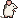

Legal notice
Information under § 5 DDG. Deutsche Fassung ↓
Theseus – Florian Alexander Rühlc/o Online-Impressum #8474
Europaring 90
53757 St Augustin
Germany
- Contact
- Email: theseus@unru.sh
- Alternative contact
- Form: Online Impressum
- Regulatory authority
- Landesanstalt für Medien Nordrhein-Westfalen, Germany
- Dispute resolution
- We are not obliged to take part in dispute resolution proceedings before a consumer arbitration board, and we don't do so voluntarily.
Liability for content
We wrote the content of these pages with great care, but we can't guarantee that it's accurate, complete or up to date. As a service provider we are responsible for our own content on these pages under general law. We aren't obliged to monitor third-party information that is transmitted or stored, or to look for circumstances that point to illegal activity. Obligations to remove or block information under general law remain unaffected. Liability is only possible from the moment we learn of a specific infringement; when we do, we remove the content at once.
Theseus is a client for Open WebUI servers that other people run. We don't operate those servers and aren't responsible for the models, answers or other content they provide.
Liability for links
These pages link to external websites whose content we don't control, so we can't accept liability for it. The provider or operator of a linked page is always responsible for its content. We checked the linked pages for possible infringements when we linked them and found none. Monitoring them permanently isn't reasonable without a concrete reason; if we learn of an infringement, we remove the link at once.
Copyright
The source code of Theseus is published under the GNU General Public License, version 3 (GitHub). The paintings and prints shown on these pages are in the public domain (CC0), credited where they appear. The plaque typeface, Departure Mono, is licensed under the SIL Open Font License 1.1. All other content and works created by the operator are subject to German copyright law; reproducing, editing, distributing or using them beyond the limits of copyright law needs the written consent of the author. If you notice a copyright infringement, please tell us; we remove such content at once.
Impressum
Angaben gemäß § 5 DDG
Theseus – Florian Alexander Rühlc/o Online-Impressum #8474
Europaring 90
53757 St Augustin
- Kontakt
- E-Mail: theseus@unru.sh
- Alternativer Kontaktweg
- Formular: Online Impressum
- Zuständige Regulierungs- und Aufsichtsbehörde
- Landesanstalt für Medien Nordrhein-Westfalen, Sitz: Deutschland
- Verbraucherstreitbeilegung / Universalschlichtungsstelle
- Wir nehmen nicht an Streitbeilegungsverfahren vor einer Verbraucherschlichtungsstelle teil und sind dazu auch nicht verpflichtet.
Haftung für Inhalte
Die Inhalte unserer Seiten wurden mit größter Sorgfalt erstellt. Für die Richtigkeit, Vollständigkeit und Aktualität der Inhalte können wir jedoch keine Gewähr übernehmen. Als Diensteanbieter sind wir gemäß § 7 Abs. 1 DDG für eigene Inhalte auf diesen Seiten nach den allgemeinen Gesetzen verantwortlich. Nach §§ 8 bis 10 DDG sind wir als Diensteanbieter jedoch nicht verpflichtet, übermittelte oder gespeicherte fremde Informationen zu überwachen oder nach Umständen zu forschen, die auf eine rechtswidrige Tätigkeit hinweisen. Verpflichtungen zur Entfernung oder Sperrung der Nutzung von Informationen nach den allgemeinen Gesetzen bleiben hiervon unberührt. Eine diesbezügliche Haftung ist jedoch erst ab dem Zeitpunkt der Kenntnis einer konkreten Rechtsverletzung möglich. Bei Bekanntwerden von entsprechenden Rechtsverletzungen werden wir diese Inhalte umgehend entfernen.
Theseus ist eine App für Open-WebUI-Server, die von Dritten betrieben werden. Für diese Server und die dort angebotenen Modelle, Antworten und sonstigen Inhalte sind wir nicht verantwortlich.
Haftung für Links
Unser Angebot enthält Links zu externen Webseiten Dritter, auf deren Inhalte wir keinen Einfluss haben. Deshalb können wir für diese fremden Inhalte auch keine Gewähr übernehmen. Für die Inhalte der verlinkten Seiten ist stets der jeweilige Anbieter oder Betreiber der Seiten verantwortlich. Die verlinkten Seiten wurden zum Zeitpunkt der Verlinkung auf mögliche Rechtsverstöße überprüft. Rechtswidrige Inhalte waren zum Zeitpunkt der Verlinkung nicht erkennbar. Eine permanente inhaltliche Kontrolle der verlinkten Seiten ist jedoch ohne konkrete Anhaltspunkte einer Rechtsverletzung nicht zumutbar. Bei Bekanntwerden von Rechtsverletzungen werden wir derartige Links umgehend entfernen.
Urheberrecht
Der Quellcode von Theseus ist unter der GNU General Public License, Version 3, veröffentlicht (GitHub). Die auf diesen Seiten gezeigten Gemälde und Grafiken sind gemeinfrei (CC0) und dort, wo sie erscheinen, nachgewiesen. Die Schrift Departure Mono steht unter der SIL Open Font License 1.1. Alle übrigen durch den Seitenbetreiber erstellten Inhalte und Werke auf diesen Seiten unterliegen dem deutschen Urheberrecht. Die Vervielfältigung, Bearbeitung, Verbreitung und jede Art der Verwertung außerhalb der Grenzen des Urheberrechtes bedürfen der schriftlichen Zustimmung des jeweiligen Autors bzw. Erstellers. Sollten Sie auf eine Urheberrechtsverletzung aufmerksam werden, bitten wir um einen entsprechenden Hinweis. Bei Bekanntwerden von Rechtsverletzungen werden wir derartige Inhalte umgehend entfernen.